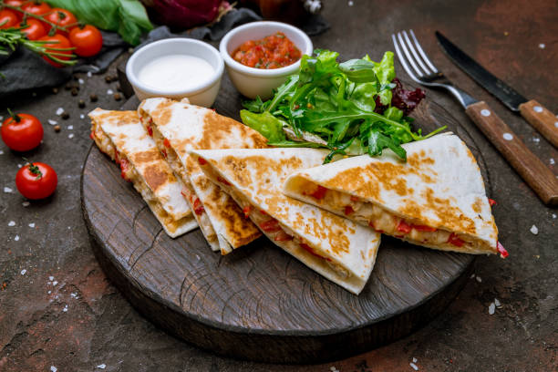
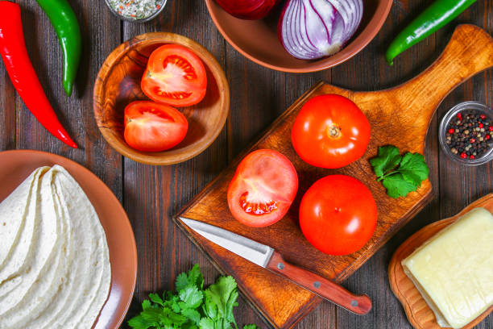
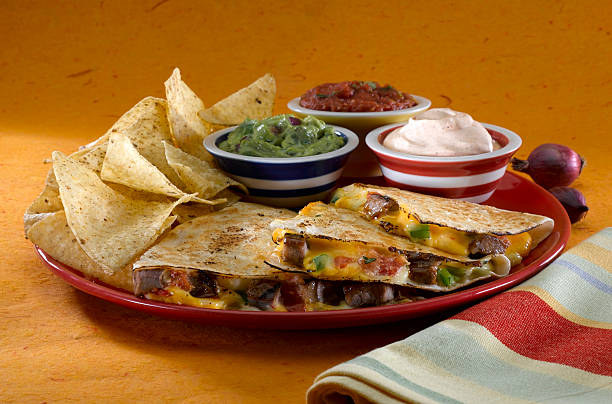
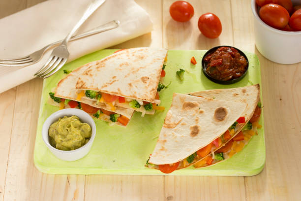

What is Quesadillas?
A quesadilla is a popular Mexican dish consisting of a tortilla filled with cheese and other ingredients, folded, and cooked until the cheese melts. The name "Quesadilla" comes from the Spanish word "Queso", meaning cheese, reflecting the dish's core ingredient.
 Ingredients
Chipotle Sauce
Garnish
For More Recipes Click Hear Go To Youtube
Visit Google For More Recipes
Author Urvisha Patel